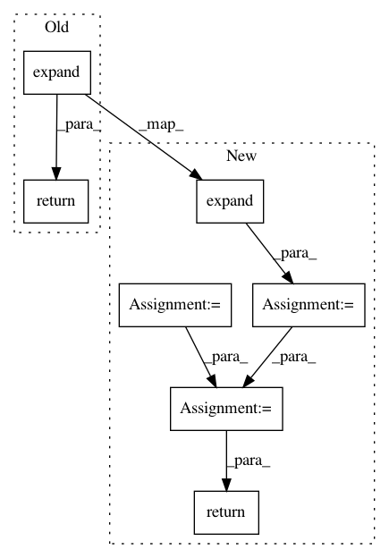

766bd71d6cca7313988b02784be6d56834e8c744,kornia/filters/filter.py,,filter3D,#Any#Any#Any#Any#,102
Before Change
input_pad: torch.Tensor = F.pad(input, padding_shape, mode=border_type)
// convolve the tensor with the kernel.
return F.conv3d(input_pad, tmp_kernel.expand(c, -1, -1, -1, -1), groups=c, padding=0, stride=1)
After Change
tmp_kernel = normalize_kernel2d(tmp_kernel.view(
bk, dk, hk * wk)).view_as(tmp_kernel)
tmp_kernel = tmp_kernel.expand(-1, c, -1, -1, -1)
// pad the input tensor
depth, height, width = tmp_kernel.shape[-3:]
padding_shape: List[int] = compute_padding([depth, height, width])
input_pad: torch.Tensor = F.pad(input, padding_shape, mode=border_type)
// kernel and input tensor reshape to align element-wise or batch-wise params
tmp_kernel = tmp_kernel.reshape(-1, 1, depth, height, width)
input_pad = input_pad.view(-1, tmp_kernel.size(0), input_pad.size(-3), input_pad.size(-2), input_pad.size(-1))
// convolve the tensor with the kernel.
output = F.conv3d(input_pad, tmp_kernel, groups=tmp_kernel.size(0), padding=0, stride=1)
return output.view(b, c, d, h, w)
In pattern: SUPERPATTERN
Frequency: 3
Non-data size: 7
Instances
Project Name: arraiy/torchgeometry
Commit Name: 766bd71d6cca7313988b02784be6d56834e8c744
Time: 2020-10-19
Author: sj8716643@126.com
File Name: kornia/filters/filter.py
Class Name:
Method Name: filter3D
Project Name: arraiy/torchgeometry
Commit Name: 766bd71d6cca7313988b02784be6d56834e8c744
Time: 2020-10-19
Author: sj8716643@126.com
File Name: kornia/filters/filter.py
Class Name:
Method Name: filter2D
Project Name: cornellius-gp/gpytorch
Commit Name: ab865efb86e0f43a86d9cffb4ab20fd989b11921
Time: 2020-08-24
Author: gpleiss@gmail.com
File Name: gpytorch/distributions/multivariate_normal.py
Class Name: MultivariateNormal
Method Name: variance